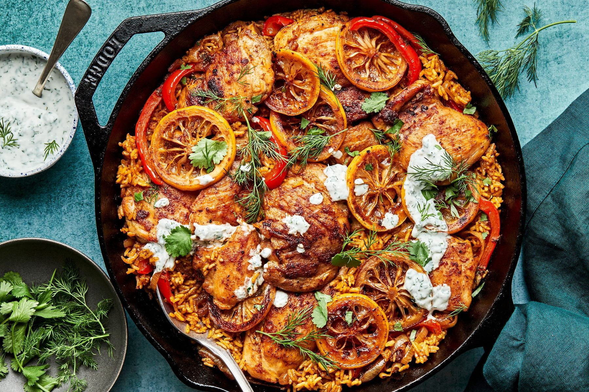

One Pot Chicken and Rice

The Best Variation On An Easy One Pot Chicken And Rice Recipe
This one pot meal combines seasoned chicken thighs and caramelized lemons with fluffy white rice for a hearty and delicious meal.
It’s big and bright, and delivers big time cozy dinner vibes with fresh and flavorful herbs. We just love this one pot chicken thighs and rice recipe with herb yogurt.
Ingredients
- 2 pounds boneless skinless chicken thighs
- 2 teaspoons kosher salt
- 2 teaspoons smoked paprika
- 2 teaspoons chili powder
- 1 teaspoon brown sugar
- 1/2 teaspoon black pepper
- 3 tablespoons olive oil
- 1 lemon, thinly sliced
- 2 large shallots, thinly sliced
- 1 red bell pepper, thinly sliced
- 1.5 cups jasmin rice
- 2 garlic cloves, grated
- 1/2 teaspoon ground turmeric
- 1 tablespoon minced fresh dill
- 3 cups chicken stock
Herb Yogurt
- 1 cup plain Greek yogurt
- 1/4 cup cilantro
- 2 tablespoons minced fresh dill
- 1 garlic clove, grated
- 3 tablespoons fresh lemon juice (from 1 to 2 lemons)
- 1 teaspoon kosher salt
Steps
- Make the chicken. Pat chicken dry with paper towels and season all over with 1 teaspoon of the salt.
- In a small bowl, combine 1 teaspoon of the smoked paprika, 1 teaspoon of the chili powder, the brown sugar, and the black pepper.
- Heat 1 tablespoon of olive oil in a large saucepan over medium-high heat. Once the oil is glistening, working in batches as necessary, add the chicken in a single layer. Cook, undisturbed, until the chicken is lightly browned, 4-5 minutes per side. Season the chicken in the pot with the spice mixture and cook until golden all over, about 1 more minute. Transfer the chicken to a plate.
- Add another tablespoon of olive oil to the saucepan and reduce the heat to medium. Add the lemon slices in an even layer and cook until caramelized, 5-7 minutes. Transfer the lemons to the plate with the chicken. Add 2-3 tablespoons of the chicken stock to the pan and scrape up any browned bits from the bottom of the pan.
- Add the remaining 1 tablespoon of olive oil to the saucepan. Once the oil is glistening, add the shallots and peppers and cook until softened, about 4 minutes. Add the rice, garlic, turmeric, dill, the remaining teaspoon of salt, the remaining teaspoon smoked paprika, and the remaining teaspoon chili powder. Cook, stirring, until spices are fragrant, about another 2 minutes. Add the chicken stock and stir to combine. Return the chicken, lemons and any collected juices to the saucepan. Bring to a simmer, cover and cook until the liquid has absorbed, the rice is tender, and the chicken is cooked through, about 20 minutes.
- Meanwhile, make the herb yogurt. In a medium bowl, stir together the yogurt, cilantro, dill, garlic, lemon juice, and salt.
- Divide the chicken and rice between plates and garnish with cilantro and dill. Serve the cilantro yogurt on the side.